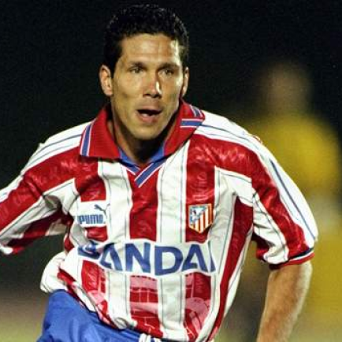
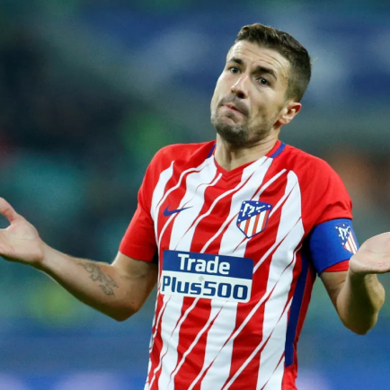
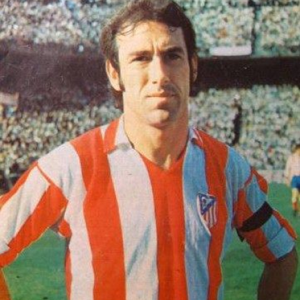
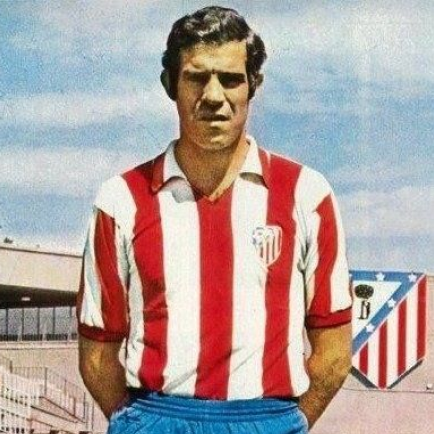

Atlético de Madrid
Clube espanhol de futebol, o Club Atlético de Madrid foi fundado a 30 de abril de 1903 por um grupo de jovens bascos e madrilenos. De início, o clube chamava-se Athletic, tal como o Athletic de Bilbau, do País Basco, do qual era uma filial. Nessa época, o equipamento da formação espanhola era azul, mas em 1911 mudou para o tradicional vermelho e branco em riscas verticais, que valeu a alcunha de colchoneros (as cores do equipamento eram parecidas com as de uma marca de colchões muito popular na altura).
Títulos
Liga europa: 3
Campeonato Espanhol: 11
Copa do Rei: 10

Ídolos
- 
- 
- 
- 
Diego Simeone
Um dos maiores ídolos do Atlético de Madrid é Adelardo Rodríguez, que defendeu o clube de 1959 a 1976 e por enquanto é o recordista de jogos pelo Atleti: ao todo, disputou 551 partidas. Ele viveu uma das fases mais vitoriosas do time da capital, colecionando três títulos nacionais (La Liga), cinco Copas do Rei (à época, conhecida como Copa do Generalíssimo) e um Mundial de Clubes. O ex-meia também liderou uma fundação oficial do Atlético, que realiza trabalhos sociais na Espanha e em outros países.
Gabi
Outro espanhol que é ídolo do Atlético de Madrid é Gabi. O volante iniciou sua trajetória no futebol profissional com a camisa do clube de Madri e completou mais de 400 jogos pelo time. No currículo, o jogador, que foi capitão da equipe, venceu o Campeonato Espanhol, a Copa do Rei e a Supercopa da Espanha. Ele se aposentou dos gramados em 2020.
Adelardo Rodríguez
Um dos maiores ídolos do Atlético de Madrid é Adelardo Rodríguez, que defendeu o clube de 1959 a 1976 e por enquanto é o recordista de jogos pelo Atleti: ao todo, disputou 551 partidas. Ele viveu uma das fases mais vitoriosas do time da capital, colecionando três títulos nacionais (La Liga), cinco Copas do Rei (à época, conhecida como Copa do Generalíssimo) e um Mundial de Clubes. O ex-meia também liderou uma fundação oficial do Atlético, que realiza trabalhos sociais na Espanha e em outros países.
Luis Aragonés
Considerado um dos maiores nomes do futebol espanhol, Luis Aragonés é um símbolo no Atlético de Madrid. Maior artilheiro do clube com 172 gols, o ex-meia defendeu a equipe por dez temporadas e conquistou três títulos de La Liga, além de um vice-campeonato da Champions League, em 1974. Aragonés ainda teve uma contribuição importante como treinador, com quatro passagens pelo banco de reservas do Atleti e sete taças conquistadas.
Metropolitano Stadium
O estádio foi terminado de construir em 1993 com um desenho do estúdio de arquitetos de Antonio Cruz e Antonio Ortiz como projeto vencedor do concurso para uma "Ciudad Deportiva de la Comunidad de Madrid". O estádio tinha uma capacidade inicial para 20.000 espectadores. As instalações foram inauguradas em 1994.[11] Em 2002, a Comunidade de Madrid transferiu ao Ayuntamiento de Madrid a titularidade do estádio.[7]